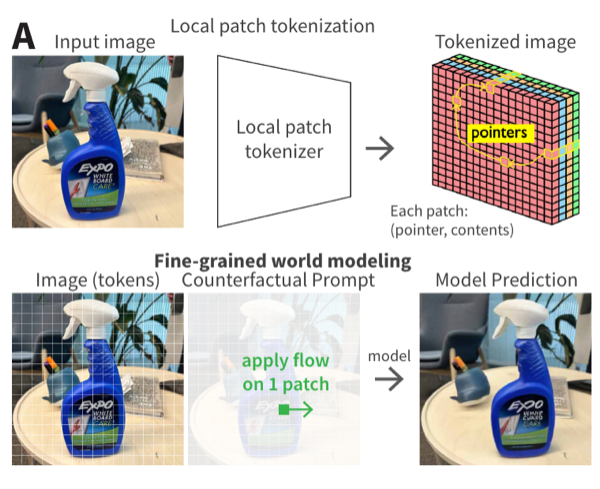

|

|
VAST: Visual Abstractions as Streams of Thought
Khai Loong Aw*,
Klemen Kotar*,
Baihan Zhang*,
Yifan Liu,
Lilian Naing Chen,
Rahul Mysore Venkatesh,
Atlas Kazemian,
Wanhee Lee,
Daniel L. K. Yamins
* denotes equal contribution
Conference on Cognitive Computational Neuroscience (CCN), 2026
paper /
openreview
A vision-language model that reasons through visual streams of thought — camera pose, depth, optical flow, and point tracks — rather than language tokens alone, enabling controllable world modeling and a single model that unifies diverse visual-linguistic tasks.
|